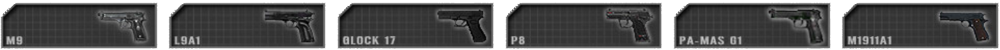
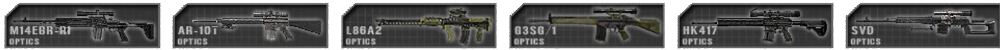
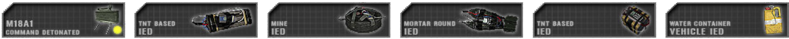
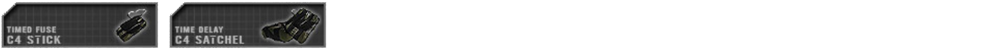
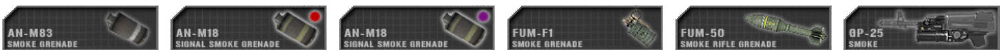

Armas y Equipamientos
Informaciones Generales de Armas y Equipamientos
Después de moverse durante un tiempo prolongado, necesitarás tomarte un momento para ser capaz de disparar con precisión a objetivos a larga distancia. Los enfrentamientos a corta distancia no se verán afectados por el movimiento basado en desviación. Esto permite al jugador hacer pequeñas correcciones sin sufrir alguna desviación al disparar. Tirarse al suelo para disparar afectará por unos segundos tu desviación, pero ofrece la mayor precisión a la hora de disparar a objetivos a larga distancia una vez se haya recuperado.
La mayoría de las armas se encuentran por default en modo semiautomático.
Las arnas deben ser recargadas manualmente (tecla por defecto R). La desviación de las armas no se ven afectadas al usar mirillas o sin ellas equipadas. En PR: BF2, las armas están clasificadas en categorías:
 Rifles de Asalto Están usualmente disponible en varias variantes con diferentes mirillas. Apuntar con una mira de aumento tiene una ventaja alta pero reduce la visión al tu alrededor comparados con las miras de hierro u holográficas.
Rifles de Asalto Están usualmente disponible en varias variantes con diferentes mirillas. Apuntar con una mira de aumento tiene una ventaja alta pero reduce la visión al tu alrededor comparados con las miras de hierro u holográficas.
Kits: Todos los kits que no utilizan otra arma primaria o están desarmados
 Lanza Granadas montadas (UGL) Están montadas en la parte de abajo del Rifle de asalto y son usadas contra grupos de enemigos o individuales que estén a cubierto. También son efectivos contra vehículos no blindados y se pueden usar de manera efectiva a distancias mucho más allá de los 200 m. Las granadas deben viajar 28 m antes de armarse o no detonarán. Los UGL también pueden disparar granadas de humo que se utilizan para ocultar la vista del enemigo. El rango del lanzador se puede configurar usando una mira de escalera adjunta al arma. Mientras apunta hacia abajo con esta mira, el menú de radio principal (tecla por defecto Q) se puede usar para establecer el rango a la distancia del objetivo (Ver Configurar Distancia de la Mira). Cuando se enfrenta a objetivos más altos o más bajos que las distancias predefinidas, es importante compensar esto. En los mapas nocturnos, el granadero también tendrá acceso a rondas de bengalas..
Lanza Granadas montadas (UGL) Están montadas en la parte de abajo del Rifle de asalto y son usadas contra grupos de enemigos o individuales que estén a cubierto. También son efectivos contra vehículos no blindados y se pueden usar de manera efectiva a distancias mucho más allá de los 200 m. Las granadas deben viajar 28 m antes de armarse o no detonarán. Los UGL también pueden disparar granadas de humo que se utilizan para ocultar la vista del enemigo. El rango del lanzador se puede configurar usando una mira de escalera adjunta al arma. Mientras apunta hacia abajo con esta mira, el menú de radio principal (tecla por defecto Q) se puede usar para establecer el rango a la distancia del objetivo (Ver Configurar Distancia de la Mira). Cuando se enfrenta a objetivos más altos o más bajos que las distancias predefinidas, es importante compensar esto. En los mapas nocturnos, el granadero también tendrá acceso a rondas de bengalas..
Kits: Granadero
Pistolas Son usadas tradicionalmente por el líder de patrulla para seguridad y signo de su autoridad. Francotiradores las usan como armas secundarias de defensa en rango cercano. Algunos insurgentes no contaran con sus armas primarias pero tendrán las secundarias.
Kits: Oficial, Francotirador, Piloto, Granadero Vietnam, Varios kits insurgentes
 Escopetas son mortales cuando se usan en lugares cerrados. También se pueden usar para romper puertas y portones cerrados. Los civiles insurgentes pueden ser arrestados con perdigones, lo que simula incapacitar a un informante con perdigones de goma. Algunas escopetas usan balas de ruptura que solo se pueden usar para abrir puertas cerradas.
Escopetas son mortales cuando se usan en lugares cerrados. También se pueden usar para romper puertas y portones cerrados. Los civiles insurgentes pueden ser arrestados con perdigones, lo que simula incapacitar a un informante con perdigones de goma. Algunas escopetas usan balas de ruptura que solo se pueden usar para abrir puertas cerradas.
Kits: Fusileros Breacher en fuerzas convencionales. Varios kits Insurgentes / Hamas / Talibanes/ Milicia
Tirador Designado (DMR) son usados para combatir objetivos con disparos precisos. Pueden ser desplegados para aumentar su precisión a consta de no moverse. Mientras se lo despliega se pierde un poco de la precisión del arma, lo cual se debe esperar unos segundos después de haber apoyado el arma. Si disparas a más de 600m tendrás que compensarlo debido a la caída de bala y aún más si tienes que disparar a un objetivo en movimiento. Para una precisión mejor, el tirador debe esperar un segundo entre disparos.
Kits: Tirador
 Rifle de Francotirador Son usados para enfrentar objetivos de alta prioridad a largas distancias. Su velocidad de disparo es lenta comparado con un arma normal. La posición del francotirador influencia la precisión de un tiro lejano. Se debe recordar que a partir de los 600m ya encontraras caída de bala. Máxima precisión se obtiene esperando 8 segundos después de un movimiento con el arma y 4 segundos tras haber disparado. Apretado la tecla (3) podrás aguantar la respiración por 8 segundos, con este sonido puedes estimar el tiempo necesario para disparar. Maten el botón de disparar presionado tras haber disparado, eso dejara que puedas observar cómo fue tu tiro antes de recargar.
Rifle de Francotirador Son usados para enfrentar objetivos de alta prioridad a largas distancias. Su velocidad de disparo es lenta comparado con un arma normal. La posición del francotirador influencia la precisión de un tiro lejano. Se debe recordar que a partir de los 600m ya encontraras caída de bala. Máxima precisión se obtiene esperando 8 segundos después de un movimiento con el arma y 4 segundos tras haber disparado. Apretado la tecla (3) podrás aguantar la respiración por 8 segundos, con este sonido puedes estimar el tiempo necesario para disparar. Maten el botón de disparar presionado tras haber disparado, eso dejara que puedas observar cómo fue tu tiro antes de recargar.
Kits: Francotirador
 Sub-Fusiles (SMG) son usadas para situaciones de corto alcance. Su velocidad de disparo es rápida y disparan munición de pistola tales como 9mm, aunque hay algunas excepciones. Algunas metralletas aparecen como defensa personal (PDW) las cuales usualmente tienen un cañón más pequeño dotándolas de un aumento en maniobrabilidad y portabilidad. Estas armas pueden ser usadas en movimiento pero son muy malas de larga distancia.
Sub-Fusiles (SMG) son usadas para situaciones de corto alcance. Su velocidad de disparo es rápida y disparan munición de pistola tales como 9mm, aunque hay algunas excepciones. Algunas metralletas aparecen como defensa personal (PDW) las cuales usualmente tienen un cañón más pequeño dotándolas de un aumento en maniobrabilidad y portabilidad. Estas armas pueden ser usadas en movimiento pero son muy malas de larga distancia.
Kits: Conductor, Fusilero AT, HAT, Líder de Patrulla, Fusilero Breacher en algunas fuerzas convencionales
 Ametralladoras Ligeras (LMG) Son usadas para suprimir el enemigo y puede destruir una patrulla completa en combates casi cercanos o en emboscadas. Pueden ser desplegadas para aumentar su precisión, estabilidad y alcance. Cuando usas la LMG desplegada, su precisión aumenta pero tu movilidad es mínima. La postura del jugador afecta todo el tiempo al disparar esta arma, y se recomienda usarlo cuando estés tumbado. El modo no desplegado se usa cuando el jugador se mueve y necesita retroceder devolviendo fuego rápido sin ningún retraso en corto alcance.
Ametralladoras Ligeras (LMG) Son usadas para suprimir el enemigo y puede destruir una patrulla completa en combates casi cercanos o en emboscadas. Pueden ser desplegadas para aumentar su precisión, estabilidad y alcance. Cuando usas la LMG desplegada, su precisión aumenta pero tu movilidad es mínima. La postura del jugador afecta todo el tiempo al disparar esta arma, y se recomienda usarlo cuando estés tumbado. El modo no desplegado se usa cuando el jugador se mueve y necesita retroceder devolviendo fuego rápido sin ningún retraso en corto alcance.
Kits: Fusilero automático
 Ametralladoras Medianas (MMG) Son la clase alternativa de la ametralladora. Usan un calibre mayor de 7.62mm, puede tener efectos devastadores en ciertas situaciones y son excelentes para suprimir a los enemigos a largo alcance. Están limitadas a sólo poder disparar desplegadas y 10 segundos en reposo antes de disparar, para que alcancen una precisión óptima.
Ametralladoras Medianas (MMG) Son la clase alternativa de la ametralladora. Usan un calibre mayor de 7.62mm, puede tener efectos devastadores en ciertas situaciones y son excelentes para suprimir a los enemigos a largo alcance. Están limitadas a sólo poder disparar desplegadas y 10 segundos en reposo antes de disparar, para que alcancen una precisión óptima.
Kits: Ametrallador pesado
 Granadas de fragmentación tienen un gran radio de explosión, pero no son precisas al tirarlos en movimiento o saltando y su rango es muy corto. Tarda unos 5 segundos en detonar una vez sacado el seguro. La RKG-3 explota al impactar, y está diseñada para usar contra vehículos. Las piedras solo causan daños menores, pero tras recibir varios golpes pueden ser letales. Para alertar a los aliados antes de tirar una granada, usa la radio apretando (Q) o por el Mumble alternativamente.
Granadas de fragmentación tienen un gran radio de explosión, pero no son precisas al tirarlos en movimiento o saltando y su rango es muy corto. Tarda unos 5 segundos en detonar una vez sacado el seguro. La RKG-3 explota al impactar, y está diseñada para usar contra vehículos. Las piedras solo causan daños menores, pero tras recibir varios golpes pueden ser letales. Para alertar a los aliados antes de tirar una granada, usa la radio apretando (Q) o por el Mumble alternativamente.
Kits: Granadas: mayor parte de los kits, especialmente Oficial y Fusilero | Rocas: civiles y algunos insurgentes
 Cuchillos y Bayonetas son letales al atacar al enemigo. Insurgentes enemigos abatidos con cuchillo contarán como arrestados. Los ataques cuerpo a cuerpo sin arma matarán a un enemigo en unos 5 golpes.
Cuchillos y Bayonetas son letales al atacar al enemigo. Insurgentes enemigos abatidos con cuchillo contarán como arrestados. Los ataques cuerpo a cuerpo sin arma matarán a un enemigo en unos 5 golpes.
Kits: Todos. Puños: Piloto, Civil y desarmado
 Anti-Tanque Ligero (LAT) Son usados contra objetivos blindados ligeros, no son efectivos contra blindados medianos o pesados. El jugador debe preparar el lanzador antes de poder apuntar y disparar lo cual toma como 4 segundos antes de que llegue a su precisión de disparo óptima. Todo depende de que lanzador estés usando. Algunos disponen de las distancias en la mirilla, mientras que otras son ajustables, pero en general son precisas dentro de los 500m. Impactar con eficacia a un objetivo a larga distancia requiere de habilidad y oportunidad para tener éxito. Se les puede configurar la distancia mientras se apunta con la mirilla, para hacerlo presiona la letra (Q) y selecciona la distancia a la que se encuentra tu objetivo. (Ver Configurar Distancia de la Mira) o puedes hacerlo manualmente apuntando más arriba o abajo.
Anti-Tanque Ligero (LAT) Son usados contra objetivos blindados ligeros, no son efectivos contra blindados medianos o pesados. El jugador debe preparar el lanzador antes de poder apuntar y disparar lo cual toma como 4 segundos antes de que llegue a su precisión de disparo óptima. Todo depende de que lanzador estés usando. Algunos disponen de las distancias en la mirilla, mientras que otras son ajustables, pero en general son precisas dentro de los 500m. Impactar con eficacia a un objetivo a larga distancia requiere de habilidad y oportunidad para tener éxito. Se les puede configurar la distancia mientras se apunta con la mirilla, para hacerlo presiona la letra (Q) y selecciona la distancia a la que se encuentra tu objetivo. (Ver Configurar Distancia de la Mira) o puedes hacerlo manualmente apuntando más arriba o abajo.
Kits: Fusilero AT, HAT en Milicia / Talibanes / Hamas
 Anti-Tanques Pesados (HAT) se utilizan para atacar vehículos blindados. Pueden destruir armaduras ligeras y medianas con un solo golpe, mientras que los tanques de batalla principales (MBT) reciben múltiples golpes para destruirlos. La efectividad del AT pesado depende de dónde golpee el MBT. El blindaje de un tanque es más débil en la parte trasera del vehículo y en la parte superior de la torreta. Por el contrario, el lado más fuerte del tanque es el frente. Para preparar el arma para disparar, primero debe colocar el arma durante un tiempo considerable, alrededor de 10 segundos. Para rastrear efectivamente al objetivo, debe estar a una distancia larga, de lo contrario, el arma se vuelve imprecisa durante el rastreo. Una vez que los marcadores de retícula se asienten en la posición centrada, estará listo para disparar. Los lanzadores particulares están equipados con una guía por cable que le permite guiar la ojiva directamente hacia el objetivo. Para rastrear un objetivo en movimiento, mantenga presionado el botón de disparo principal hasta que el misil dispare y continúe rastreando el objetivo hasta el impacto. Algunos HAT no están guiados y disparan directamente y algunos no muestran marcadores de retícula. Antes de disparar, asegúrese de que el objetivo esté a más de 30 m de usted, de lo contrario, la ojiva no se armará y no detonará.
Anti-Tanques Pesados (HAT) se utilizan para atacar vehículos blindados. Pueden destruir armaduras ligeras y medianas con un solo golpe, mientras que los tanques de batalla principales (MBT) reciben múltiples golpes para destruirlos. La efectividad del AT pesado depende de dónde golpee el MBT. El blindaje de un tanque es más débil en la parte trasera del vehículo y en la parte superior de la torreta. Por el contrario, el lado más fuerte del tanque es el frente. Para preparar el arma para disparar, primero debe colocar el arma durante un tiempo considerable, alrededor de 10 segundos. Para rastrear efectivamente al objetivo, debe estar a una distancia larga, de lo contrario, el arma se vuelve imprecisa durante el rastreo. Una vez que los marcadores de retícula se asienten en la posición centrada, estará listo para disparar. Los lanzadores particulares están equipados con una guía por cable que le permite guiar la ojiva directamente hacia el objetivo. Para rastrear un objetivo en movimiento, mantenga presionado el botón de disparo principal hasta que el misil dispare y continúe rastreando el objetivo hasta el impacto. Algunos HAT no están guiados y disparan directamente y algunos no muestran marcadores de retícula. Antes de disparar, asegúrese de que el objetivo esté a más de 30 m de usted, de lo contrario, la ojiva no se armará y no detonará.
Kits: Fuerzas Convencionales HAT
 Misiles Anti-Aéreos Portables (SAM) se utilizan para derribar aviones enemigos. Para lograr esto, necesita tener visualmente el objetivo siguiéndolo por el aire. Una vez que se establezca el seguimiento, escuchará un tono bajo, luego de unos segundos cuando se logre el bloqueo, escuchará un tono alto secundario, en este punto puede disparar. Las contramedidas, como las bengalas, evitarán que destruyas tu objetivo de manera efectiva, por lo que tu ángulo de ataque en relación con la dirección de desplazamiento del vehículo es fundamental para lograr un impacto. Los pilotos enemigos recibirán un sonido de advertencia unos segundos después de que un SAM los haya fijado, dándoles tiempo para maniobrar lejos de la amenaza. Algunas facciones más antiguas, como las facciones de las Malvinas, no tendrán armas antiaéreas de aeguimiento automatico y deberán ser guiadas manualmente.
Misiles Anti-Aéreos Portables (SAM) se utilizan para derribar aviones enemigos. Para lograr esto, necesita tener visualmente el objetivo siguiéndolo por el aire. Una vez que se establezca el seguimiento, escuchará un tono bajo, luego de unos segundos cuando se logre el bloqueo, escuchará un tono alto secundario, en este punto puede disparar. Las contramedidas, como las bengalas, evitarán que destruyas tu objetivo de manera efectiva, por lo que tu ángulo de ataque en relación con la dirección de desplazamiento del vehículo es fundamental para lograr un impacto. Los pilotos enemigos recibirán un sonido de advertencia unos segundos después de que un SAM los haya fijado, dándoles tiempo para maniobrar lejos de la amenaza. Algunas facciones más antiguas, como las facciones de las Malvinas, no tendrán armas antiaéreas de aeguimiento automatico y deberán ser guiadas manualmente.
Kits: Anti-Aéreo
Explosivos detonados a distancia Son explosivos que se detonan por un dispositivo remoto por el jugador quien puso los explosivos y generalmente se los usa para emboscadas y defensa. Minas Anti-Personales (Claymores) oman 5 segundos para armarse después de haberlas puesta. Al armarla el detonador hará un ruido indicando cuando haya pasado ese tiempo. Si los explosivos son activados prematuramente, no explotaran. Algunos explosivos se lo tienen que poner estando en el suelo, y un jugador puede poner hasta 4 minas AP y 5 C4 o IED simultáneamente. Algunos soldados pueden colocar dos grupos independientes de explosivos que pueden activarse individualmente. Todos estos explosivos pueden ser desactivados por la llave inglesa del ingeniero de combate. Durante la colocación, puedes colocar un marcador en el mapa para las fuerzas amigas presionando Q. Puedes colocar hasta 3 marcadores en total.
Kits: Varían dependiendo a la facción, pero están los kits Fusilero AP, Zapador e Ingeniero
Explosivos con temporizador son explosivos con un temporizador que detonan segundos después de haberlo colocado y son usados principalmente para la tarea de destruir FOBs enemigas, Alijos y vehículos abandonados. Los dos tipos principales de explosivos con temporizador son paquetes de C4 grandes y pequeños. El C4 grande es un poco más del doble de potente que el C4 pequeño y solo está disponible para el kit de ingeniero de combate de fuerzas convencionales, mientras que el C4 pequeño lo llevan los kits de ingeniero de combate de fuerzas convencionales y Breacher. Solo necesita colocar una carga de C4 grande o pequeño para destruir una base de fuego, pero una sola carga de C4 pequeño no destruirá una base de fuego de inmediato, sino que colapsará unos segundos después de que la carga haya detonado, dando el tiempo del equipo contrario para reparar la base de fuego. Para destruir los cimientos de una base de fuego u otro activo desplegable, simplemente coloque otra carga pequeña de C4 en los cimientos y la destruirá poco después de detonar. El C4 pequeño también se puede usar para eliminar vehículos estacionarios, con 1x C4 pequeño para eliminar vehículos blindados ligeros (Land Rovers, Civilian Cars, Technicals, lightly armoured HMMWVs, etc.), 2x C4 pequeño para eliminar Jeeps blindados y Camiones (Up-Armoured HMMWV, Panther CLV and Support & Logistics Trucks such as the M-35, etc.), 3x C4s pequño para eliminar APCs. El C4 grande se puede desactivar con la llave inglesa/llave inglesa del ingeniero de combate.
Kits: C4 pequeño; Especialista e Ingeniero y C4 Grande: Ingeniero
Minas son explosivos de contacto para la clase de ingeniero. Estas se pueden instalar en cualquier terreno y serán visibles. Durante la colocación se puede marcar para los soldados aliados pulsando la tecla Q. uedes colocar un máximo de 3 marcas, las minas pueden ser removidas con el paquete de herramientas del ingeniero de combate.
Kits: Ingeniero de combate
Vendaje estaura tu HP (vida) un 25%. Son tiradas al piso para curar al jugador en pie más cercano. Esta venda es seleccionada apretando el número 8 o 9. kit de primeros auxilios Pueden curar completamente a un jugador y se los usa seleccionado y mientras miras al jugador herido, presionas el botón para disparar (click izquierdo) y empezara a curar. El kit de primeros auxilios no se tira al suelo y toma su tiempo en curar completamente al jugador herido. Un médico puede curarse el mismo usando el vendaje que tiene. Jugadores en un vehículo con un médico, serán curados automáticamente todo el tiempo. epipen es usada para revivir solo a los de tu equipo. Recién revividos necesitaran ser atendidos rápidamente curándolos con el kit de primeros auxilios antes de que mueran desangrados. Arrastrar se usa para mover a un jugador herido antes de administrar la epinefrina. Debes estar agachado antes de poder usar esto.
Kits: Vendaje: Todos los kits, Los demás elementos son propios del kit médico
Munición Extra se puede usar cuando un jugador se está quedando sin rondas. Una sola bolsa de munición generalmente proporcionará algunos cargadores y una granada o dos. La bolsa de munición también se puede usar para rearmar armas desplegables como MG, lanzadores antitanques y emplazamientos de morteros.
Kits: Fusilero y Fusileros insurgentes
 Pala se utiliza para construir estructuras desplegables para el equipo. No se puede usar de forma ofensiva. Para construir una estructura, debe apuntar hacia ella y mantener presionado el botón de disparo hasta que se detenga la animación de excavación. La opción alternativa del sub-menu de la radio permite a los líderes de escuadrón demoler trincheras amigables y bloqueos de carreteras con alambre de púas.
Pala se utiliza para construir estructuras desplegables para el equipo. No se puede usar de forma ofensiva. Para construir una estructura, debe apuntar hacia ella y mantener presionado el botón de disparo hasta que se detenga la animación de excavación. La opción alternativa del sub-menu de la radio permite a los líderes de escuadrón demoler trincheras amigables y bloqueos de carreteras con alambre de púas.
Llave inglesa/Reparación se utiliza para desarmar y retirar explosivos como minas terrestres, artefactos explosivos improvisados, bengalas y trampas para granadas. También puede proporcionar reparaciones a vehículos ligeros particulares cuando han sufrido daños. También se puede utilizar para construir alambre de púas. Tanto la pala como la llave inglesa son capaces de reparar un caché.
Kits: ala: Todos los kits excepto Oficial, Médico, Francotirador, Piloto y Civil/Desarmado
Llave inglesa en kits de Ingeniero.
Granadas de Humo son usadas para nublar al enemigo o para dar señales a un vehículo aéreo aliado. Generalmente le toma 30 segundos para que el humo aparezca por completo y dura aproximadamente 1 minuto antes de que desaparezcag.
Kits: Granada de humo: Casi todos los Kits | Humo señal: Oficial, fuerzas convencionales Francotirador y, Piloto
Binoculares permiten a los soldados identificar enemigos lejanos y contactos desconocidos. También lo pueden usar para pedir fuego de morteros. El designador de objetivos por láser (GTLD) es usado para marcar objetivos para aeronaves aliadas o para morteros.
Kits: Binoculares: Conductor y Francotirador, en fuerzas un convencionales la mayoría de los kits | GTLD: Oficial y Observador
 Radios y celularesson usadas para reportar contactos enemigos al resto del equipo, también son usados por los líderes de Patrulla para pedir apoyo de otras unidades y para desplegar estructuras a construir.
Radios y celularesson usadas para reportar contactos enemigos al resto del equipo, también son usados por los líderes de Patrulla para pedir apoyo de otras unidades y para desplegar estructuras a construir.
Kits: Oficial, Líder de célula, Observador y Civil
Gancho se usa para atravesar paredes, edificios o para acceder a la parte superior de las estructuras para permitir que el miembro clave del escuadrón tenga la ventaja de estar alto. Después de que el gancho se haya adherido con éxito a una superficie, cualquier jugador puede ascender por la cuerda presionando la tecla "entrar/salir" (E) y moviéndose hacia adelante para subir y hacia atrás para deslizarse por la cuerda. Permanecen en su posición durante 3 minutos y el jugador puede recuperarlos usando la tecla del kit de recolección (G).
Kits: Fusilero Breacher, Observador y Civil.
Paracaídas son utilizados por pilotos y paracaidistas. Se despliegan automáticamente cuando se generan en una facción desplegada por paracaidistas. Al expulsarse de un avión de ala fija, el asiento eyectable también desplegará automáticamente el paracaídas. También se puede implementar manualmente en otros casos con la tecla 9. Los paracaídas deben abrirse con suficiente tiempo antes de tocar el suelo para evitar lesiones o un caso leve de muerte. Después de que su líder de escuadrón haya llegado al suelo en un mapa que admite paracaídas, aparece una caja de suministros especial junto a él. Esta caja solo se puede utilizar para solicitar kits.
Kits: iloto y en algunos mapas todos los kits respawneables
Cambio de Mira (BUIS)
El Cambio de Mira (BUIS) están diseñados para proporcionar al operador un método alternativo para la adquisición de un objetivo dependiendo de la situación. Siempre que el arma tenga BUIS equipado, un jugador podrá cambiar entre miras de respaldo y ópticas usando la tecla predeteminada del ciclo de camara (C). El jugador puede alternar entre los modos de vista que se indica con la letra BUIS en la esquina inferior derecha. S para alcance, B para BUIS. El modo BUIS se puede alternar en cualquier momento, ya sea que esté apuntando hacia abajo o no, pero debe volver a apuntar para cambiar entre los modos.
{% figure "../assets/buis.png" %} {% endfigure %}
Configurar Distancia de la Mira
{{ "Video Tutorial - Distancia de la Mir " | youtube("cLfdH1EHWPA") }}